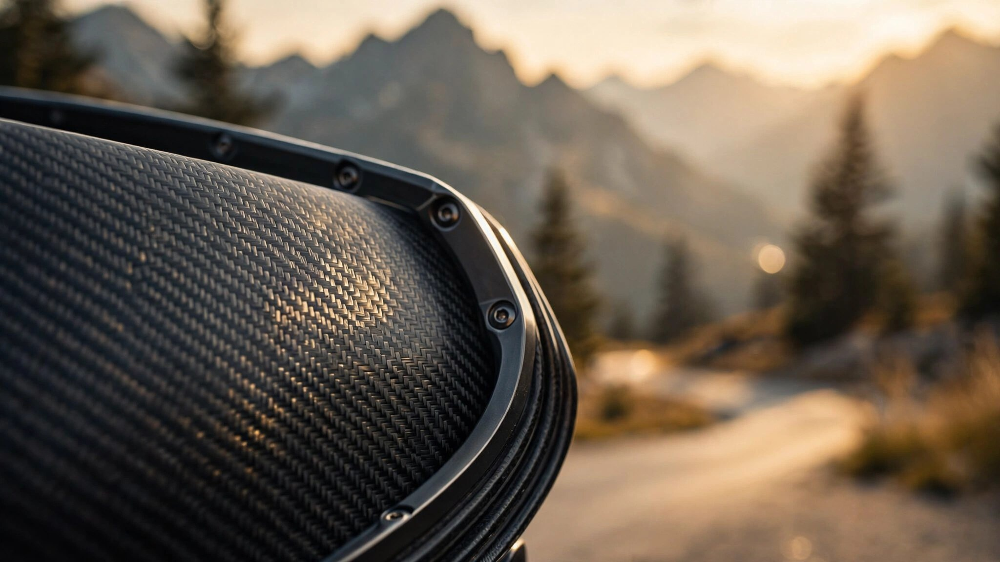

23 Seconds at 14,115 Feet: How the ZR1X Exploited Altitude Physics to Demolish the Pikes Peak Production Car Record

Pikes Peak is a different kind of racetrack. Most circuits sit near sea level, where atmospheric pressure hovers around 14.7 psi, air density is approximately 1.225 kg/m3, and every engine on the grid breathes the same thick atmosphere. Pikes Peak starts at 9,390 feet and finishes at 14,115. Over those 12.42 miles and 156 corners, the air gets progressively thinner. By the summit, atmospheric pressure has dropped to roughly 8.6 psi. Air density falls to 58% of its sea-level value. Every engine that relies on combustion, which is to say every engine that burns fuel, receives substantially less oxygen per intake stroke at the top than at the bottom.
Naturally aspirated engines suffer the most, and Garrett Motion's engineering literature documents a consistent rule: 3% power loss per 1,000 feet of elevation gain. A 670-horsepower Corvette Z06 running the same course would produce approximately 388 horsepower by the time it crossed the summit timing beam, a deficit so severe that the car would feel closer in straight-line thrust to a base Stingray at sea level than to the Z06 its sticker claims it is, and no amount of ECU remapping or intake tuning can fix the problem because the cylinders are simply swallowing less air. Donner's Porsche 911 Turbo S does not have this problem, at least not to the same degree. Its twin turbochargers compress incoming air before it enters the combustion chambers, partially restoring the mass flow that altitude steals. Turbo engines are altitude machines, but they are not immune.
What Turbochargers Can and Cannot Do at 14,000 Feet
A turbocharger is a compressor driven by exhaust energy. Exhaust gas spins the turbine wheel, which in turn drives the compressor wheel to pressurize intake air. At sea level, a turbocharger operating at a boost pressure of, say, 18 psi above atmospheric must push the compressor wheel fast enough to achieve a pressure ratio of roughly 2.2:1. At 14,115 feet, where atmospheric pressure has fallen to 8.6 psi, achieving the same absolute manifold pressure requires a pressure ratio of approximately 3.1:1. Compressor demand escalates substantially.
Two problems emerge immediately, the first being that higher pressure ratios push the compressor wheel closer to its surge line, the operating boundary beyond which airflow reverses direction through the compressor, producing violent oscillations that can destroy the wheel. Turbocharger engineers size their compressor maps to provide operational margin above the surge line under the most demanding load cases, but altitude devours that margin with ruthless efficiency, which means a turbocharger perfectly matched for sea-level boost targets and operating comfortably at 2,000 feet may find itself dancing at the edge of compressor surge by the time the road reaches 14,000 feet and the required pressure ratio has climbed by 40%.
On the turbine side, the problem inverts. Exhaust gas leaving the combustion chambers at altitude is less dense, which means less mass flow through the turbine per unit time, and less mass flow produces less turbine work. More compressor work is required to achieve a higher pressure ratio, but the turbine delivers less. This is the fundamental tension of turbocharging at altitude: the compressor demand curve rises while the turbine supply curve falls. Equilibrium shifts toward lower boost pressure than what the engine would achieve at sea level.
A well-calibrated turbocharged engine at Pikes Peak summit typically retains somewhere between 82 and 88 percent of its sea-level power output, a figure that sounds almost comfortable until you remember it still means the LT7 is shedding somewhere in the neighborhood of 130 to 190 horsepower relative to what it would deliver at Laguna Seca or Road Atlanta, tracks that sit close enough to sea level for altitude to be irrelevant. GM's LT7 V8, rated at 1,064 horsepower at sea level, likely produced somewhere between 870 and 935 horsepower at the 14,115-foot finish line. Exact figures depend on GM's boost calibration strategy, intercooler effectiveness, and how aggressively the ECU holds wastegate position at altitude. GM has not published altitude-specific dynamometer data.
An Electric Motor Doesn't Breathe
The ZR1X's front-mounted electric drive unit produces 186 horsepower and 145 lb-ft of torque through electromagnetic force acting on copper windings immersed in a magnetic field. None of these physical processes depend on atmospheric pressure, air density, or oxygen concentration. At 14,115 feet, the motor delivers exactly the same output as it does at sea level. Exactly. Not approximately, not with partial compensation, not with clever software workarounds. Physics, not software, makes the difference.
At sea level, that 186 horsepower represents 14.9% of the ZR1X's combined 1,250. At the Pikes Peak summit, if the V8 is producing 900 horsepower (a midrange estimate for the altitude loss), the electric motor's 186 unchanged horsepower now represents 17.1% of the 1,086 total. Modest in percentage terms, but the effect on driving dynamics is anything but modest, because the electric motor's torque goes to the front axle, which is the axle responsible for corner-exit traction in an all-wheel-drive car climbing a mountain road with 156 turns.
JR Hildebrand described the sensation to duPont Registry after the run: "You've got the front drive unit literally pulling you out of the corners, right up into the RPM band of the ICE powertrain behind you. And it's all just completely seamless." That seamlessness is engineered, not incidental. After every corner, the V8's turbochargers must rebuild boost pressure from whatever partial-throttle or off-throttle state preceded it. Turbo lag is a volume and inertia problem at any altitude, but at 14,000 feet, where the turbine has less exhaust energy to work with, the lag is worse. Instant electric torque fills this gap, arriving at full value within milliseconds of throttle application. While the twin-scroll turbines are still accelerating, the front axle is already pulling.
156 Corners and a 1.9-kWh Battery
The ZR1X's battery pack stores 1.9 kWh of energy, the same gross capacity as the E-Ray's unit. For comparison, a Porsche Taycan carries an 89-kWh battery and even a Toyota Prius stores 1.3 kWh. A small pack by design, not built for range but for rapid cycling between discharge and regeneration at rates that would damage a battery optimized for sustained energy delivery.
Pikes Peak's 156 corners over 12.42 miles create an average spacing of roughly 420 feet between turning events. At the ZR1X's average speed of 80.3 mph, that spacing translates to approximately 3.6 seconds per corner-to-corner segment. Battery management must execute a charge-discharge cycle on the order of every few seconds throughout the entire run: deplete on corner exit when the front motor fires, recover on braking and deceleration when the motor reverses into generator mode. This is hundreds of rapid, shallow cycles in under ten minutes.
Mounted low in the chassis spine and centralized between the axles, the pack contributes to the ZR1X's center of gravity. But the pack's electrical architecture is the more interesting design choice. Compared to the E-Ray's unit, the ZR1X battery operates at a higher peak voltage, which increases the power the motor can extract from a given current. Usable energy has been expanded by widening the state-of-charge window, meaning the BMS allows deeper discharge and higher peak charge rates. These changes are what let a 1.9-kWh battery sustain meaningful power output through 156 corner exits without hitting state-of-charge limits that would force the system to shut down the front motor and revert to rear-wheel drive.
Had the battery depleted mid-run, the ZR1X would have become a 1,064-horsepower rear-wheel-drive car on a narrow mountain road at altitude. Still fast. But not record-setting fast, because the eAWD traction and the electric torque fill are precisely what created the 23-second gap.
Cooling with Less Air
Thermal management at altitude is a paradox. Ambient temperature drops with elevation, roughly 2 degrees Celsius per 1,000 feet in standard atmospheric conditions, so the air at the summit is cold. This helps the intercoolers, which exchange heat between the compressed intake charge and the ambient air. Colder ambient air means a larger temperature differential, which improves heat transfer efficiency per unit of air flowing through the intercooler core.
But the air is also 42% less dense. A radiator or intercooler at altitude receives substantially less mass flow for a given vehicle speed. Heat transfer in a cross-flow heat exchanger is governed not just by temperature differential between the hot and cold sides but by the mass flow rate of the cooling medium passing through the core, a relationship that means you can have the coldest ambient air imaginable and still overheat the charge if there is not enough of it flowing past the fins. At 80 mph, the ZR1X's front-mounted radiator package pulls roughly 58% as much air mass through its cores as it would at sea level. Colder air partially offsets the lower density, but not entirely. Net cooling capacity drops.
For the LT7, which runs twin turbochargers in a hot-vee layout where both compressors sit between the cylinder banks directly above exhaust ports, thermal management is already aggressive at sea level. Charge air exits the compressors at elevated temperature, passes through air-to-water intercoolers serviced by a dedicated low-temperature cooling circuit separate from the engine's primary coolant loop, and returns to the intake manifold. At altitude, the compressors are working harder, producing hotter charge air. Intercooler capacity falls. And the engine itself, still generating enormous power even at reduced altitude output, continues to dump heat into every fluid circuit.
Chevrolet's engineering team, led by Executive Chief Engineer Tony Roma, would have calibrated the thermal management system for the expected conditions. ZTK already includes upgraded cooling for sustained track use: additional radiator capacity, revised ducting, and thermal strategies that prioritize consistent power delivery over peak efficiency. But Pikes Peak introduces a variable that no road course replicates: the thermal environment changes continuously over the course of the run. At the start line, 9,390 feet, everything is manageable. By the summit, cooling capacity has degraded significantly. Managing a thermal trajectory, not a thermal steady state, is what Pikes Peak demands.
Aerodynamics Thinning Out
Downforce is proportional to air density. ZTK equips the ZR1X with a prominent carbon-fiber rear wing, carbon-fiber dive planes, and underbody strakes that together generate over 1,200 pounds of downforce at 160 mph at sea level. At 14,115 feet, those same surfaces produce approximately 700 pounds. A 42% reduction. Every aero device on the car becomes less effective as the ZR1X climbs.
Through high-speed corners, this matters enormously because aerodynamic downforce increases tire normal force, which increases grip without adding mass or requiring mechanical spring preload. Losing 500 pounds of downforce at the summit is equivalent, in grip terms, to removing a significant portion of the car's aero advantage over non-winged competitors. Donner's Turbo S carries a more modest aerodynamic package, meaning it loses less absolute downforce at altitude. But it also starts with far less, so the ZR1X still holds a net advantage. Both lose grip. Both climb.
Drag also falls with air density, which partially compensates on the straights. At sea level, ZTK's substantial wing profile creates considerable drag. At altitude, the reduced air density means less aerodynamic resistance, allowing higher straight-line speeds for a given power output. Whether the ZR1X actually reached higher peak speeds at the summit than it would have at sea level depends on whether the drag reduction outweighs the power loss. For a turbocharged car losing perhaps 15% of power but gaining 42% less drag, the net effect on top speed is roughly neutral. But Pikes Peak is not a top-speed contest. Corner-exit traction decides everything, and eAWD owns that contest.
Hildebrand's Line
JR Hildebrand is not a Pikes Peak newcomer, but this was only his third attempt at the mountain. His racing career began in IndyCar, where he finished second at the 2011 Indianapolis 500 after hitting the wall exiting Turn 4 on the final lap while leading. He brought that open-wheel precision to a vehicle weighing 3,915 pounds and producing 1,250 horsepower at sea level. His qualifying run, covering approximately the same distance as the shortened 2025 race, put him 13th on the grid overall, behind purpose-built hillclimb machines with ten times the aerodynamic downforce and half the weight.
Race day conditions were ideal. Cloud cover burned off at sunrise and temperatures stayed warm across the entire mountainside. By the time Hildebrand launched from the start line, a full grid of Ultra4 cars and GT4 Trophy racers had already cleared any loose debris from the road surface. Traction was as good as Pikes Peak offers. Hildebrand's sector splits were so fast that the Pikes Peak timing system struggled to display them. His time didn't flash on the leaderboard until the third of four sectors, where he was already five seconds clear of Donner's run.
His finishing time of 9:30.104 works out to an average of 80.3 mph over 12.42 miles. That average includes 156 corners, hairpin switchbacks, decreasing-radius bends, and stretches where the road clings to the side of the mountain with nothing but open air and a very long fall on the other side. There are no guardrails on Pikes Peak.
What Stock Actually Means Here
Roma's post-race description of the car's preparation was blunt: "This is basically a production car with the alignment and tire pressure set." The modifications required by Pikes Peak's safety regulations were limited to a roll cage, fuel cell, fire suppression system, racing seat with harness, and electrical cutoff switches. No engine tuning. No suspension geometry changes beyond alignment. No tire changes. Hildebrand's Michelin Pilot Sport Cup 2 R tires are the same compound and construction available as a factory option on any ZR1X ordered with the ZTK package.
Other record attempts in other classes tell a different story. Ford's Super Mustang Mach-E, which won overall with Romain Dumas's 8:18.202, is a purpose-built 1,400-horsepower electric race car that shares a silhouette with the production Mach-E and virtually nothing else. Robin Shute's SendyCar V1, the fastest rear-wheel-drive entry at 8:29.497, is a bespoke hillclimb car with no production analog. Only the ZR1X, among the top results, can be ordered from a Chevrolet dealership for $209,700.
Emelia Hartford piloted a standard Corvette ZR1 on the same day. Same LT7 engine, 1,064 horsepower, but no front electric motor and rear-wheel drive only. She set the record for fastest woman on four wheels up the mountain, a result that also functions as an unintentional controlled experiment in what happens when you remove the front electric motor and the all-wheel-drive system from an otherwise identically powered Corvette and point it at 14,115 feet of altitude. Comparing her time to Hildebrand's would quantify the exact advantage that eAWD and the electric motor provide at altitude, though the variables of driver experience and line choice make the comparison imperfect. What is not imperfect is the physics: the ZR1 lost every watt of its 1,064 horsepower to altitude, while the ZR1X had 186 horsepower that altitude could not touch.
The Architecture Argument
Corvette's C8 generation has now demonstrated five distinct powertrain strategies in a single platform: naturally aspirated V8 (Stingray), high-revving flat-plane V8 (Z06), electrified AWD with naturally aspirated V8 (E-Ray), twin-turbo flat-plane V8 (ZR1), and twin-turbo plus electric AWD (ZR1X). Each step up the hierarchy adds a layer of engineering complexity, and each layer proves its value in a specific operating regime. Near sea level, where traction is abundant and turbo lag can be managed through corner speed, the ZR1 is devastating. ZR1X does everything the ZR1 does and adds a capability that only matters when the operating environment degrades: altitude, low traction, or both.
Pikes Peak is the most extreme expression of "both." At 14,115 feet, on a road surface that varies from smooth asphalt to patched concrete, with corners that tighten mid-radius and camber that disappears over crests, the ZR1X's architecture produces compounding advantages. V8 provides the bulk of the power. Turbochargers recover most of the altitude loss. Electric torque fills the transient gaps between corners and delivers unwavering output where the V8 falters. eAWD distributes torque to whichever axle can use it. And the battery cycling system sustains all of this for the full 9 minutes and 30 seconds without depleting, a feat of energy management that required GM's engineers to tune the charge and discharge curves for a course profile unlike anything the battery was originally validated against. No single system is sufficient. Strip any one of them away and the record falls apart: the V8 alone cannot fill the torque holes between corners, the electric motor alone cannot sustain the speeds on the straights, the turbochargers alone cannot breathe at the summit, and the battery alone cannot last the full 12 miles.
Twenty-three seconds in a 10-minute run is not a marginal improvement. It is a generational leap, the kind of gap that usually separates eras of technology rather than individual model years. Donner is a Pikes Peak legend. His Porsche, brilliant. Both were made to look slow by a Chevrolet that costs less than a base 911 Turbo S and that, by its chief engineer's account, received nothing beyond an alignment and a tire pressure check before it raced up a mountain and rewrote the record book.